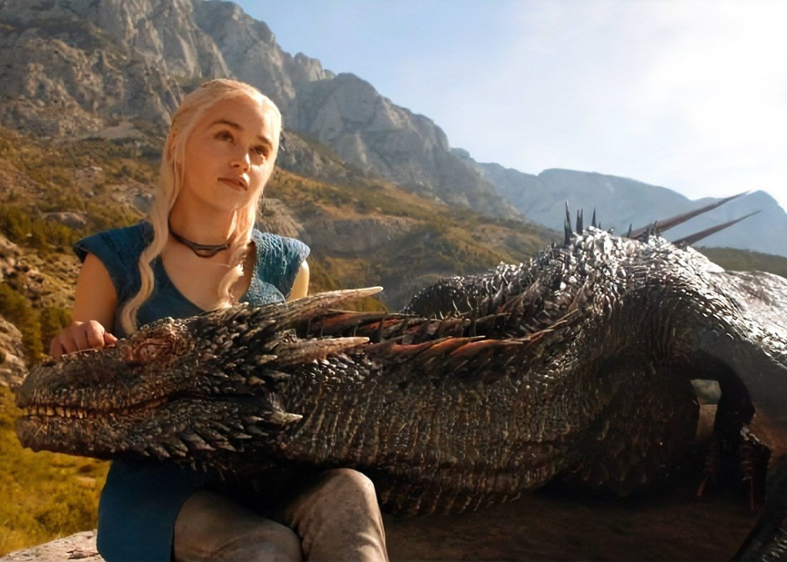
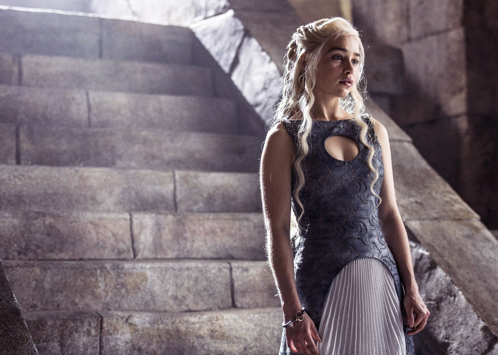

About Daenerys Stormborn - The Unburnt
So many men have tried to kill me, I don't remember all their names. I have been sold like a broodmare. I've been chained and betrayed, raped and defiled. Do you know what kept me standing through all those years in exile? Faith. Not in any gods, not in myths and legends. In myself. In Daenerys Targaryen.
 
Background
Daenerys's father, niece, and nephew were killed in Robert's rebellion. The pregnant Queen Rhaella(her mother) and young Prince Viserys(her brother) were sent to the Dragonstone, where the queen gave birth to Daenerys. On that night, a severe summer storm raged, giving Daenerys the epithet "Stormborn." Her mother died shortly thereafter, leaving Daenerys and her brother orphans.
Appearance and personality
Daenerys is most often described as uncommonly beautiful, with long, pale silver-gold hair and purple eyes.She is slender and pale, although taller than some of her female ancestors. Tales of Daenerys's beauty are numerous, and throughout the novels she encounters countless suitors who seek her hand in marriage, sometimes to gain control of her three dragons. She is fluent in the Common Tongue of Westeros, Dothraki, High Valyrian and bastard Valyrian, which she speaks with a Tyroshi accent.Over the course of the first three novels she becomes fluent in the Dothraki language and Ghiscari, spoken in the slave cities in Essos.
Daenerys grew up in constant fear of being discovered and killed by agents of the Usurper King, Robert Baratheon. Her older brother Viserys frequently abused her, which led to the development of her fearful, submissive, and furtive nature. However, over the course of the narrative, Daenerys finds her inner strength and courage and emerges as a natural leader adored by her people. She is often described as honorable and compassionate, if somewhat naïve, although she can be harsh and vengeful against those who seek to harm her or her followers.
Storylines
Daenerys Targaryen is introduced as the exiled princess of the Targaryen dynasty. She and her brother Viserys were smuggled to Essos during the end of Robert's Rebellion. For most of her life, Daenerys has been under the care of Viserys, whom she fears, as he abuses her whenever she displeases him. Viserys marries Daenerys to the powerful Dothraki warlord Khal Drogo in exchange for his military support to retake the Iron Throne. Daenerys becomes a khaleesi. During the wedding, exiled knight Ser Jorah Mormont pledges his loyalty to Daenerys while her benefactor Illyrio Mopatis gifts her three petrified dragon eggs.
Mirri deceives Daenerys by using her unborn son's life as a sacrifice to heal Drogo but leaves him in a permanent catatonic state, forcing Daenerys to end her husband's life. Daenerys punishes Mirri by having her tied to Drogo's funeral pyre as she sets it alight. She also lays the three dragon eggs on Drogo's body and steps into the fire herself. At daybreak, after the fire has died out, Daenerys emerges with three baby dragons whom she names Drogon, Rhaegal, and Viserion.
Tyrion defies Daenerys by freeing his brother, who is then captured on his way back to Cersei. Later, Tyrion urges Daenerys to spare the inhabitants of King's Landing if they surrender. Daenerys destroys the city's defenses and the city surrenders, but she burns King's Landing, killing countless civilians. In the aftermath, Daenerys declares she "liberated" these people and will "liberate" the world. Tyrion is arrested for treason. Arya and Tyrion warn Jon that Daenerys will view his Targaryen heritage as a threat to her rule, and House Stark is not safe; Tyrion says that despite Jon's love for Daenerys, it is his duty to kill her to protect the people. Jon attempts to reason with Daenerys, but when she continues to assert her actions are necessary to establish a good world, a conflicted Jon fatally stabs her and Daenerys dies in his arms as he weeps. Drogon arrives and melts the Iron Throne before leaving Westeros with Daenerys's body, grieving. Bran Stark is later elected king; he exiles Jon back to the Night's Watch to appease Daenerys's supporters.